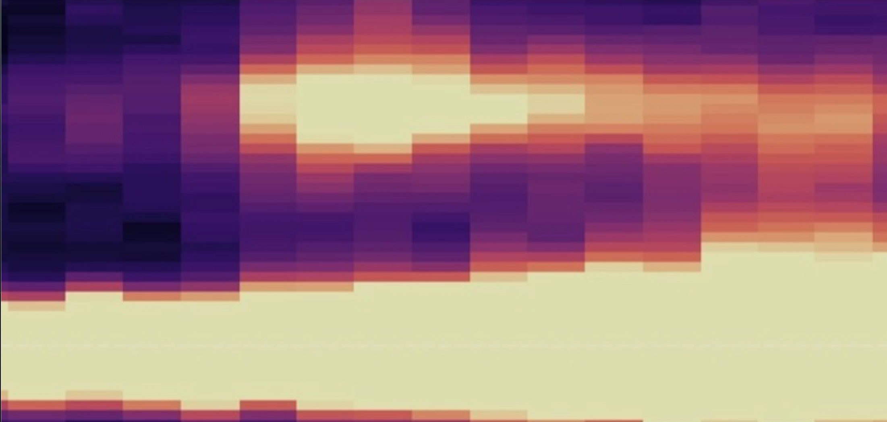

Altermagnets are a newly classified magnetic phase exhibiting spin-split band structures despite vanishing net magnetization — combining features of both ferromagnets and antiferromagnets. With their potential to transform spintronics, I am looking for ways to control altermagnetism and its excitations using momentum-resolved RIXS, XMCD, and EXAFS at synchrotron facilities worldwide.
By tuning strain through substrate choice and field-cooling protocols, we demonstrate control over the anomalous Hall effect, opening pathways for altermagnetic spintronics.